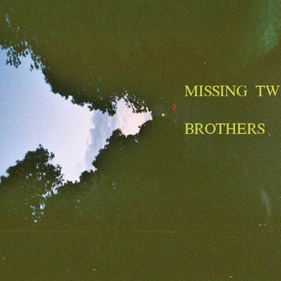

Biography
Missing Twin is Samantha Martasian.
Missing Twin is inspired by Paul Baribeau, The Mountain Goats,
and Stephen Malkmus.
Missing Twin is a Project about living in a house with a
lot of spiders.
Missing Twin is based in Boston and often shares the stage with FORT!
The Band, James Clifford, Andrew Lowery and Kismet.
